5.4 ggplot2
require(tidyverse) 또는 require(ggplot2) 실행
- 데이터에 대한 그래프는 데이터의 속성(수치형, 범주형)과 시각적 속성(점, x-y 좌표 위치, 선, 색상, 막대의 높이) 간에 대응 또는 매핑(mapping) 으로 이루어짐
- R 에서 가장 유명한 데이터 시각화 패키지 중 하나로 2005년 Hadley Wickham이 개발 및 배포
- Leland Wilkinson 의 grammar of graphics (Wilkinson 2012) 를 구현
- ggplot의 grammar of graphics

Figure 5.19: ggplot의 grammar of graphics 주요 구성 요소
- R 기본 graphics 패키지의 경우 데이터 속성을 시각적 속성으로 매핑 시 매 경우가 고유한 작업이고, 매핑이 변경될 경우 데이터를 재구성하거나 완전히 다른 plotting 함수를 적용해야 함.
- R base graphics와 ggplot의 비교
# R 기본 데이터셋: ToothGrowth
ToothGrowth %>%
group_by(supp, dose) %>%
summarise(mean = mean(len)) %>%
mutate(dose = factor(dose,
ordered = TRUE))-> tg_long`summarise()` regrouping output by 'supp' (override with `.groups` argument)tg_long %>%
spread(supp, mean) %>%
column_to_rownames("dose") %>% # 열 값을 열이름으로 변환(in tibble 패키지)
as.matrix -> tg_mat
# R graphics: barplot() 사용
barplot(tg_mat, beside = TRUE)Figure 5.20: R 기본 barplot() 생성 그래프
dose별 OJ와 VC 막대도표:dose로 그룹화를 하기 위해 데이터 구조 변경(전치) 필요

Figure 5.21: R 기본 barplot() 생성 그래프: 데이터 전치
- 막대 대신 선(line)으로 표현
Figure 5.22: R 기본 선 그래프: plot(), lines() 함수 사용
plot()함수 호출 시 y 축 범위가 첫 번째 선에 대해서만 설정- x 축이 범주 대신 번호가 사용
- ggplot 사용: 데이터 프레임에만 적용 가능(데이터 구조는 long-format)
# require(ggplot2)
ggplot(data = tg_long,
aes(y = mean)) -> gmap # 기본 mapping 유지를 위해
# ggplot 클래스 객체 저장
gmap +
geom_bar(aes(x = supp, fill = dose),
stat = "identity", # 데이터 고유값을 막대 높이로 사용
position = "dodge") # 막대 위치 조정(beside 조건과 유사)
Figure 5.23: ggplot()과 geom_bar()을 이용한 막대 도표
- 데이터 구조를 변경하지 않고 ggplot의 매핑 변수 변경

Figure 5.24: x와 fill의 mapping 변경
- ggplot을 이용한 선 도표 생성
Figure 5.25: geom_line()을 이용한 선 그래프 생성
- 기본 그래프 함수를 이용해 막대도표 대신 선 도표 생성 시 완전히 다른 명령 사용
- 선 그래프 생성 시 기본 그래프는 하나씩 도표를 추가한 반면, geom_line()의 경우 모든 선이 한번에 그려짐
5.4.1 기본 문법
ggplot(data = <DATA>) +
<GEOM_FUNCTION>(mapping = aes(<MAPPINGS>)) +
<SCALE_FUNCTION> +
<LABEL or GUIDES> +
<ANNOTATION> +
<THEME>용어(terminology)
- data: 시각화의 대상으로 관측값과 변수(열)로 이루어짐
- geom: 데이터의 값을 시각적으로 보여주기 위한 레이어로 막대, 선, 점과 같은 기하학적 객체
- aesthetic: geom의 시각적 속성을 정의하며, x, y 위치, 선 색상, 점 모양 등을 정의
- mapping: 데이터 값을 asthetic에 매핑
- scale: asthetic에 매핑 시 세부 값들을 제어
- guide: 그래프 해석에 도움을 주는 속성으로 x-y 축의 눈금, 레이블, 범례(legend)를 포함
- annotation: 생성한 그래프 위에 추가적인 정보(선, 화살표, 텍스트, 도형 등) 추가
- theme: 그래프의 비데이터적 요소(제목, 레이블, 글꼴, 배경색, 격자, 범례 등) 제어를 통해 그래프의 미적 효과 극대화
ggplot 계열 함수에서 범주형 변수(categorical variable)은 이산형(discrete), 수치형 변수(numeric variable)을 연속형(continuous)이라고 명칭함.
ggplot 그래프 생성 기본 단계(각 단계(layer)는 + 연산자로 덧붙혀짐)
ggplot()으로 ggplot 객체 초기화aes()함수로 x-y 축 지정- geom 계열 함수로 데이터를 시각적 요소로 매핑. 이때 aes() 함수와 같이 색상, 크기 등 지정
- scale 계열 함수를 이용해 asthetic의 세부 값을 조정
- 축 제목, 레이블, 범례 설정 조정
- 필요 시 theme 조정을 통해 시각적 요소 가미
ggplot(): ggplot 객체를 생성하는 함수로 시각화할 데이터가 무엇인지, 그리고 데이터에 포함된 변수들이 어떤 asthetic에 매핑되는지를 선언aes(): 데이터 내 변수들이 어떤 geoms 레이어에서 어떤 시각적 속성을 갖는지를 지정해주는 함수로 ggplot() 함수 내, 혹은 독립적인 레이어로 추가 가능- ggplot에서 지정한 데이터 내에서 평가되기 때문에 변수명 지정 시 원래 데이터셋 참조할 필요 없음(예:
ggplot(data = car, aes(x = speed)))
- ggplot에서 지정한 데이터 내에서 평가되기 때문에 변수명 지정 시 원래 데이터셋 참조할 필요 없음(예:
# ggplot()을 이용한 ggplot 생성
# 표현식 1
ggplot(data = <DATA>, # 데이터 프레임, 티블 객체
mapping = aes(x = <X-axis>,
y = <Y-axis>,
color = <색 속성을 부여할 변수 이름>,
fill = <면의 색 속성을 부여할 변수 이름>,
group = <group 변수 지정>
# 보통 선 그래프 작성 시 이을 선에 대한
# 그룹을 지정하기 위해 사용
group
...)) +
<GEOM_FUNCTION>
# 표현식 2
ggplot(data = <DATA>) +
aes(...) +
<GEOM_FUNCTION>(mapping = aes(...))
# 표현식 3
ggplot(data = <DATA>) +
<GEOM_FUNCTION>(mapping = aes(x, y, ...))
# 표현식 4
<GGPLOT_OBJECT> <- ggplot(data = <DATA>)
<GGPLOT_OBJECT> +
<GEOM_FUNCTION>(mapping = aes(...))# cars 데이터셋
## ggplot() 내에 aes() 지정
ggplot(data = cars,
aes(x = speed, y = dist)) +
geom_point()
## aesthetic을 ggplot() 함수 밖에서 지정
ggplot(data = cars) +
aes(x = speed, y = dist) +
geom_point()
## geom 계열 함수 내에서 asthetic 지정
ggplot(data = cars) +
geom_point(aes(x = speed, y = dist))
## ggplot 객체 생성
gp <- ggplot(data = cars); gp
gp <- gp +
aes(x = speed, y = dist); gp
gp + geom_point()
## 참고: R 기본 plot()의 결과는 객체로 저장되지 않음
grph <- plot(cars); grph- 주요 aesthetics
x,y: x-y 축에 해당하는 변수명.x와y의 이름은 생략 가능(예:ggplot(data = car, aes(speed, dist)로도 사용 가능))color: 점, 선, 텍스트 색상fill: 면(막대, 상자, 도형 등) 색상alpha: 색상의 투명도group: 시각화에 사용할 데이터의 그룹size: 점, 선, 텍스트의 크기 또는 굵기shape: 점의 모양(그림 5.3 참고). R 기본 그래픽 파라미터pch와 호환linetype: 선의 형태 지정하며 그림 5.3 의 선 형태 지정 방법 준용(숫자, 문자열 모두 사용 가능)
- 색상 관련 aesthetics:
color,fill,alphaaes()함수 내부 또는 외부에서 인수 조정 가능(함수 내부: 변수명으로 지정, 함수 외부: 특정 값으로 지정)
# 막대도표 예시
# `aes()` 함수 외부에서 사용 시 단일 값을 입력
gpcol <- ggplot(data = mpg, aes(x = class))
gpcol + geom_bar() +
labs(title = "Default geom_bar()") # 그래프 제목 지정
gpcol + geom_bar(fill = "navy") +
labs(title = "fill = 'navy'")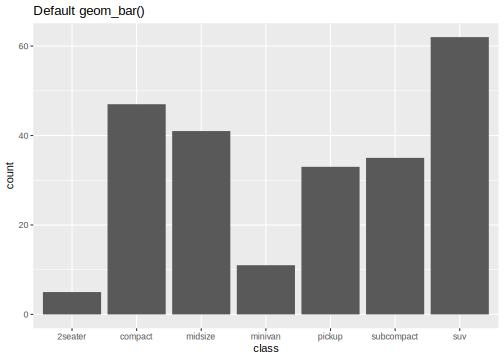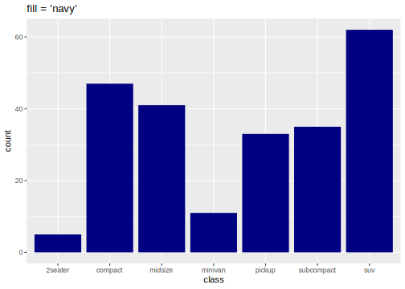
# 막대도표 예시
gpcol + geom_bar(color = "red") +
labs(title = "color = 'red'")
gpcol + geom_bar(color = "red", fill = "white")+
labs(title = "color = 'red', fill = 'white'")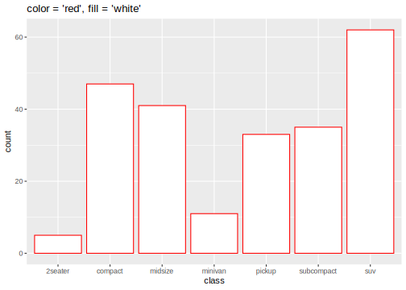
# 연료 타입에 따라 면 색 지정
gpcol +
geom_bar(aes(fill = fl)) +
labs(title = "Filled by fuel types (fl)")
# 연료 타입에 따라 막대 선 색 지정
gpcol +
geom_bar(aes(color = fl)) +
labs(title = "Colored by fuel types (fl)")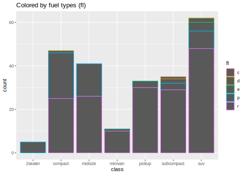
# alpha: 0-1 사이 값을 갖고 투명도 지정
# 주로 aes() 함수 밖에서 사용됨
set.seed(20200605)
df1 <- tibble(
x = rnorm(5000),
y = rnorm(5000)
)
gpalpha <- ggplot(data = df1, aes(x, y))
gpalpha + geom_point() +
labs(title = "alpha = 1")
gpalpha + geom_point(alpha = 0.1) +
labs(title = "alpha = 0.1")
- 그룹(group) aesthetic
- 기본적으로
aes()내부에서 aesthetic에 대응하는 변수가 이산형(범주형) 변수로 정해짐 - 보통은 color, shape, linetype 으로 그룹 지정이 가능하지만 충분하지 않은 경우
group인수 값 지정
- 기본적으로
# 다중 집단에 하나의 aesthetic만 적용한 경우
## gapminder 데이터셋
gapm <- read_csv("dataset/gapminder/gapminder_filter.csv")
gapm_filter <- gapm %>%
filter(grepl("Asia", region))
gpgroup <- ggplot(data = gapm_filter,
aes(x = year, y = life_expectancy))
gpgroup + geom_line(size = 0.5, alpha = 0.2)
gpgroup_l <- gpgroup + geom_line(aes(group = country),
size = 0.5, alpha = 0.2)
gpgroup_l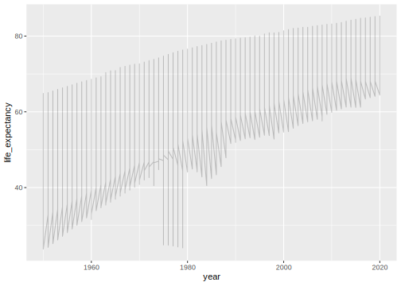
# 전체 아시아 국가의 평균 추세선
## geom_line과 geom_smooth 모두 group을 country로 지정
gpgroup_l +
geom_smooth(aes(group = country),
method = "loess",
size = 0.5,
color = "blue",
se = FALSE)
## 모든 국가에 가장 적합한 하나의 곡선으로 fitting
gpgroup_l +
geom_smooth(aes(group = 1),
method = "loess",
size = 1,
color = "blue",
se = FALSE)- 크기(size), 점 모양(shape), 선모양(linetype) aesthetic
# size 지정
gpsize <- ggplot(data = mtcars,
aes(disp, mpg))
gpsize + geom_point(size = 4)
gpsize + geom_point(aes(size = hp),
alpha = 0.5)
5.4.2 Geoms: 선 관련 geometric
geom_line(): x축에 대응한 변수의 순서대로 관측값을 선으로 연결geom_path(): 관측치가 데이터셋에 나타난 순서대로 선으로 연결geom_abline(slope, intercept): 기울기(slope) 절편(intercept)에 대한 직선 \(\rightarrow\) R 기본 그래픽 함수abline(a=value, b=value)와 유사geom_vline(xintercept): x축에 수직(y 축에 수평)인 직선 생성geom_hline(yintecept): x축에 수평(y 축에 수직)인 직선 생성
# gap-minder 데이터
gpline <- ggplot(data = gapm_filter,
aes(y = gdp_cap))
# geom_line
gpline +
geom_line(aes(x = year,
group = country),
size = 0.5,
alpha = 0.3,
linetype = "solid") -> gpline
gpline# geom_path
highlight_country <- c("South Korea", "China", "Japan",
"India", "Taiwan", "Singapore")
# dplyr 패키지 체인과 ggplot 함수 연결 가능
gppath <- gapm %>%
filter(year >= 2000,
country %in% highlight_country) %>%
ggplot(aes(x = gdp_cap,
y = life_expectancy))
gppath + geom_path(aes(group = country))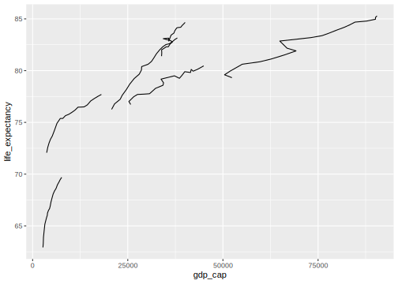
# 선 굵기 및 색상 조정
gppath +
geom_path(aes(color = country),
size = 4,
alpha = 0.5) -> gppath
# 선과 점 동시에 출력
gppath +
geom_point(aes(shape = country),
size = 2)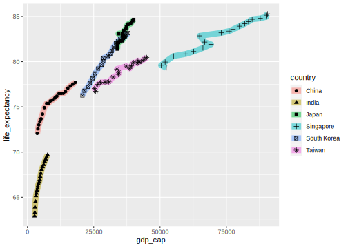
# geom_abline, geom_hline, geom_vline
## abline
m <- lm(gdp_cap ~ year, data = gapm_filter)
gpline +
geom_abline(slope = coef(m)[2],
intercept = coef(m)[1],
size = 2,
color = "blue") -> gplines
gplines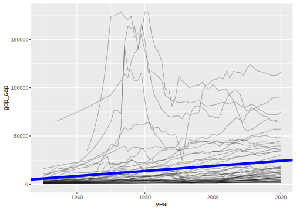
## hline
gplines +
geom_hline(yintercept = mean(gapm_filter$gdp_cap,
na.rm = TRUE),
color = "red",
size = 1) -> gplines
gplines + ggtitle("Addling a horizontal line: mean of gdp_cap")
## vline
gplines +
geom_vline(xintercept = mean(gapm_filter$year,
na.rm = TRUE),
color = "red",
size = 1) +
ggtitle("Adding a vertical line: mean of year")5.4.3 Geoms: 점 geometrics
geom_point(): ggplot 객체에 지정된 aesthetic (x-y에 대응하는 변수)에 대한 산점도를 생성geom_jitter(): 각 점의 위치에 random noise를 추가해 overplotting 처리 \(\rightarrow\)geom_point(position = "jitter")의 축약 버전
# geom_point
## 갭마인더 데이터: 2015년 기대수명 vs. 일인당 국민소득 산점도
gppoint <- gapm %>%
mutate(continent = gsub("(.+\\s)", "", region) %>%
# region 변수에서 공백 앞 문자 모두 제거
factor) %>%
filter(year == 2015) %>%
ggplot(aes(x = life_expectancy, y = gdp_cap))
gppoint +
geom_point(size = 1)## 점의 크기는 해당 국가 인구수(log10 변환) 에 비례
## 각 대륙에 따라 색 구분
## 투명도는 0.3
## --> Bubble plot
gppoint +
geom_point(aes(size = log(population, base=10),
color = continent),
alpha = 0.3)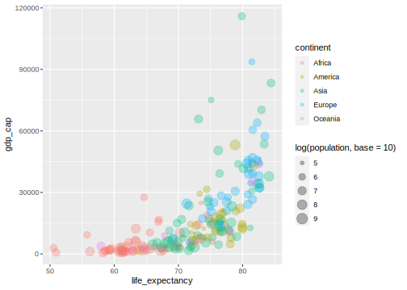
## mpg 데이터 셋
## cylinder 개수에 따른 시내 연비
gppoint2 <- ggplot(data = mpg,
aes(x = cyl, y = cty))
gppoint2 + geom_point(size = 3)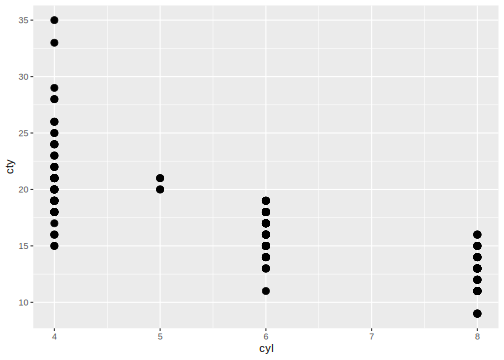
5.4.4 Geoms: 막대 geometrics
geom_bar(): 범주형(factor 또는 문자열) 변수에 대응하는 케이스의 수를 막대의 높이로 나타냄.- 기본적으로
stat_count()를 통해 각 집단 별 케이스 수가 그래프에 표현 - 함수 내
stat인수 값을 “identity”로 설정 시 데이터 값 표현 가능
- 기본적으로
geom_col(): 데이터 값 자체를 높이로 표현stat_identity()를 사용
# geom_bar(), geom_col() 주요 함수 인수
<MAPPING> = aes() 함수를 통해 수행
geom_bar()의 경우 aes() 내 x 위치에 대응하는
변수명만 입력해도 되지만, geom_col()의 경우,
x, y 에 대응하는 변수 모두 입력
<ARGUMENTS>
- width: 상자의 너비 조정
- positon: 문자열 또는 위치 조정 관련 함수 호출 가능
두 개 이상의 범주가 한 그래프에 표현된 경우,
디폴트 값은 "stack" (position_stack() 호출).
두 번째 범주에 해당하는 막대를 나란히 배열하고자 할 때,
positon = "dodge", "dodge2", 또는 position_dodge(값) 사용Examples
# geom_bar()와 geom_col() 예시
p1 <- ggplot(data = mpg,
aes(x = class)) +
geom_bar() +
labs(title = "p2: Barplot via geom_bar()",
caption = "The y-axis indicates the number of cases in each class")
p2 <- mpg %>%
group_by(class) %>%
summarise(mean = mean(cty)) %>%
ggplot(aes(x = class, y = mean)) +
geom_col() +
labs(title = "p1: Barplot via geom_col()",
caption = "The y axis indicates the identical values of means")# geom_bar(stat = "identity") 인 경우 geom_col()과 동일한 결과 도출
p1 <- mpg %>%
group_by(class) %>%
summarise(mean = mean(cty)) %>%
ggplot(aes(x = class, y = mean)) +
geom_bar(stat = "identity") +
labs(title = "p1: Barplot via geom_bar(stat = 'identity')")`summarise()` ungrouping output (override with `.groups` argument)# 막대도표 x-y 축 변환
# 이 경우 geom_bar()에 aesthetic 추가
p2 <- ggplot(mpg) +
geom_bar(aes(y = class)) +
labs(title = "p2: Map 'class' variable to y")# diamonds dataset
# 2개의 범주형 변수가 aesthetic에 mapping된 경우
# stacked barplot
gbar_init <- ggplot(data = diamonds) +
aes(x = color, fill = cut)
p1 <- gbar_init +
geom_bar()
# fill에 해당하는 범주에 대해 나란히 배열
p2 <- gbar_init +
geom_bar(position = "dodge2")- 막대도표 값 순으로 정렬하기
# gapminder region 별 중위수 계산
gapm_median <- gapm %>%
filter(year == 2015) %>%
group_by(region) %>%
summarise(median = median(gdp_cap, na.rm = TRUE))`summarise()` ungrouping output (override with `.groups` argument)5.4.5 Geom: 수직 범위선 관련 geometrics
오차 막대, 신뢰구간 등을 도식화 할 때 많이 활용되며 데이터의 변수를 mapping 시 위치 관련 aesthetic에 x, y 외에 ymin(또는 xmin), ymax(또는 xmax)가 사용
geom_errorbar(): 주어진 범위(구간) 내 오차막대(errorbar) 생성 \(\rightarrow\) 오차막대는 선 끝에 범위 선과 수직인 선이 생성geom_linerange(): 주어진 범위(구간) 내 선 생성
# geom_errorbar(), geom_linerange() 주요 함수 인수
<MAPPING> = 기본 x, y에 대한 aesthetic 기본 mapping 이외
범위를 지정하는 ymin (ymax), xmin (ymax) 지정 필수
<ARGUMENTS>
- width: geom_errorbar()에서 범위선에 수직인 선의 너비 짖어
- positon: 문자열 또는 위치 조정 관련 함수 호출 가능
positon = "dodge", "dodge2", 또는 position_dodge(값) 사용# geom_errorbar() 예시
# diamonds cut, color에 따른 carat의 평균, 표준편차, 95% 신뢰구간 계산
# dplyr + pipe operator를 이용한 통계량 계산
carat_summ <- diamonds %>%
group_by(cut, color) %>%
summarise(N = n(),
mean = mean(carat),
sd = sd(carat)) %>%
# 95 % 신뢰구간(모분산 모른다고 가정)
mutate(lcl = mean - qt(0.975, N-1)*sd/sqrt(N),
ucl = mean + qt(0.975, N-1)*sd/sqrt(N))`summarise()` regrouping output by 'cut' (override with `.groups` argument)gerror_init <- ggplot(data = carat_summ) +
aes(x = cut, y = mean, color = color)
# 오차 막대 도표 (디폴트) 오차 범위는 95 % 신뢰구간
gerror_init +
geom_errorbar(aes(ymin = lcl,
ymax = ucl))
# 오차 막대 도표2
# 선과 점 추가
# 집단 별 위치 및 막대 조정
gerror_init +
geom_errorbar(aes(ymin = lcl,
ymax = ucl),
width = 0.1, # 선 너비 지정
position = position_dodge(0.8)) +
geom_line(aes(group = color)) +
geom_point(size = 3)- 평균-95 % 신뢰구간 오차 막대 도표 예시
# 점과 선에 대해서도 동일하게 position 조정 필요
# position은 수동으로 조정("dodge" 등 대신 position_dodge(value) 입력)
gerror_init +
geom_errorbar(aes(ymin = lcl,
ymax = ucl),
width = 0.1, # 선 너비 지정
position = position_dodge(0.8)) +
geom_line(aes(group = color),
position = position_dodge(0.8)) +
geom_point(size = 3,
position = position_dodge(0.8))
- 막대도표 위에 오차 막대 표시 예제
# warpbreaks 데이터
# R 기본 그래픽스 barplot() 예제와 동일한 그래프 생성
break_summ <- warpbreaks %>%
group_by(wool, tension) %>%
summarise(N = n(),
mean = mean(breaks),
sem = sd(breaks)/sqrt(N)) `summarise()` regrouping output by 'wool' (override with `.groups` argument)ggplot(data = break_summ) +
aes(x = tension, y = mean, fill = wool) + # aesthetic 지정
geom_col(position = position_dodge(0.9),
color = "black") + # 테두리 선 색상 지정(검정)
geom_errorbar(aes(ymin = mean - sem,
ymax = mean + sem),
position = position_dodge(0.9),
width = 0.1)- 95 % 신뢰구간 시뮬레이션 예제
# geom_linerange 예시
# 정규 난수 생성
# 표본 크기 n = 30, 반복 N = 200
# 평균 mu = 20, 표준편차 sx = 10
# 각 표본에 대한 95 % 신뢰구간 계산(모분산은 안다고 가정)
set.seed(20200609)
n <- 30; N = 200
mu <- 20; sx <- 10
X <- mapply(rnorm,
rep(n, N),
rep(mu, N),
rep(sx, N))
mi <- apply(X, 2, mean) # 각 반복에 대한 표본 평균 계산
si <- apply(X, 2, sd) # 각 반복에 대한 표준편차 계산
alpha <- 0.05 # 유의수준
lower_ci <- mi - qnorm(1-alpha/2)*si/sqrt(n) # 신뢰구간 하한
upper_ci <- mi + qnorm(1-alpha/2)*si/sqrt(n) # 신뢰구간 상한
df_ci <- tibble(lower_ci, upper_ci) %>%
mutate(nsim = seq_len(N),
mu_contain = lower_ci <= mu &
mu <= upper_ci)
ggci_init <- ggplot(df_ci) +
aes(x = nsim) # simulation 횟수 정보
ggci_init +
geom_linerange(
aes(ymin = lower_ci, # 하한
ymax =upper_ci, # 상한
color = mu_contain), # 색 지정
size = 1.2,
alpha = 0.3
) +
geom_hline(yintercept = mu,
color = "tomato",
size = 1)5.4.6 Geoms: 텍스트 관련 geometrics
x-y 좌표축에 텍스트를 추가하기 위한 함수. 여기서 미리 지정된 x-y aesthetic에 대한 매핑은 사용할 수 있으며, 별도의 aesthetic 정의를 통해 새로운 좌표점에 텍스트 추가 가능
geom_text()geom_label(): 추가한 텍스트 뒤에 사각형을 동시에 출력
<MAPPING>: 필수 aesthetic은 x, y, label 임
다음 aesthetic 속성들은 geom_text() 또는 geom_label()
함수에서 인수(aes() 함수 외부)로 사용 가능
- angle: 텍스트 각도 조정
- family: 텍스트 폰트 페미리
- fontface: 텍스트 형태("bold", "italic", "bold.italic", "plain" 가능)
- hjust: 텍스트 수평 위치 조정
- vjust: 텍스트 수직 위지 초정
<ARGUMENTS> (중요 인수)
- parse: 논리값, 문자열을 parsing 하여 expression() 함수로 표현
- check_overlap: 이전에 생성된 텍스트 위에 새로운 텍스트가 중첩(overlapping)될 경우
인수값이 TRUE 이면 출력하지 않음. (geom_text()에서만 사용 가능)geom_text() 예시
gtext_init <- mtcars %>%
rownames_to_column(var = "model") %>%
ggplot(aes(x = wt, y = mpg))
gtext1 <- gtext_init +
geom_text(aes(label = model),
size = 4) + # x-y aesthetic 사용
labs(title = "geom_text() with size = 4")
# 중첩되는 텍스트 제거
gtext2 <- gtext_init +
geom_text(aes(label = model),
size = 4,
check_overlap = TRUE) +
labs(title = "Remove overlapped text with check_overlap = TRUE")
# geom_label()
# check_overlap 옵션 사용할 수 없음
gtext3 <- gtext_init +
geom_label(aes(label = model),
size = 4) +
labs(title = "geom_label()")
gtext4 <- gtext_init +
geom_point(size = 1) +
geom_text(aes(label = model,
color = factor(cyl)),
size = 4,
fontface = "italic",
check_overlap = TRUE) +
labs(title = "Both points and texts: using italic fontface")ggplot 텍스트 위치 조정
R 기본 그래픽 함수 text() 함수의 adj 인수와 유사
- vjust: (-) 방향 \(\uparrow\); middle = 0.5; (+) 방향 \(\downarrow\)
- hjust: (-) 방향 \(\rightarrow\); middle = 0.5; (+) 방향 \(\leftarrow\)
vjust, hjust 모두 (0, 1) 밖의 값을 갖을 수 있으나, 이러한 위치 조정은 그래프의 크기에 상대적이기 때문에 해당 값들을 이용해 텍스트 위치를 과도하게 조정하는 것이 바람직한 방법은 아님.
# hjust, vjust 별 문자 위치 표시
adj_val <- c(-0.5, 0, 0.5, 1)
df_adjust <- expand.grid(hjust = adj_val,
vjust = adj_val)
df_adjust <- df_adjust %>%
mutate(just_label = sprintf("(h=%.1f, v=%.1f)",
hjust, vjust))
ggplot(data = df_adjust) +
aes(x = hjust, y = vjust) +
geom_point(color = "gray",
alpha = 0.8,
size = 5) +
geom_text(aes(label = just_label,
hjust = hjust,
vjust = vjust))Figure 5.26: hjust와 vjust 값에 따른 텍스트 위치. https://ggplot2.tidyverse.org/articles/ggplot2-specs.html 인용
geom_text() 수식(math) 표기
- R 기본 그래픽 함수에서 적용한
expression(),bquote()함수를 이용해 수식 표현 가능. bquote()를 이용 시 생성한 표현을 다시 parsing (문자열을 expression 구문으로 해석) 하기 위해deparse()함수를 통해 문자열로 변환해줘야 함. 이 때 텍스트가label의 값으로 입력이 되기 때문에 텍스트를 expression() 형태로 바꿔주기 위해parse = TRUE로 설정해야 수식 표현 가능
set.seed(12345)
x <- rnorm(100, 5, 2)
df_dummy <- data.frame(x = 0, y = 0)
# 정규분포 pdf
expr1 <- expression(paste(f,
"(", x, ";", list(mu, sigma), ")"
== frac(1, sigma*sqrt(2*pi))*~~exp *
bgroup('(',
-frac((x-mu)^2,
2*sigma^2), ')')))
# 회귀계수 추정 공식
expr2 <- expression(hat(bold(beta)) ==
bgroup("(", bold(X)^T*bold(X),
")")^-1*bold(X)^T*bold(y))
# 그리스 문자
expr3 <- expression(alpha[1]~~beta[2]~~gamma[3]~~delta[4]
~~epsilon[5]~~theta[6]~~pi[7])
#
expr4 <- bquote(paste("Estimated" ~~
hat(mu) ==
.(sprintf("%.2f", mean(x)))))
ggplot(data = df_dummy) +
aes(x = x, y = y) +
geom_point(size = 0) +
geom_text(x = 0, y = 0, label = expr1,
size = 10) +
geom_text(x = 0, y = -0.025, label = expr2,
size = 10) +
geom_text(x = 0, y = -0.04,
label = "y[i] == beta[0] + beta[1]~x + epsilon[i]",
parse = TRUE, # 수식 내용이 문자열로 label 값으로 사용
size = 10) +
geom_text(x = 0, y = 0.025, label = expr3,
size = 10) +
geom_text(x = 0, y = 0.04, label = deparse(expr4),
parse = TRUE,
size = 10)
## ggplot 객체 저장
# ggsave("figures/ggplot-text-math.png", plot = last_plot())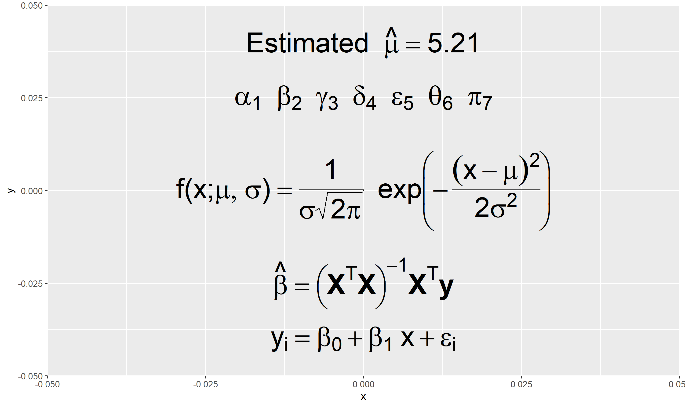
5.4.7 Geoms: 면적 관련 geometrics
geom_ribbon(): 각x값에 대해ymin과ymax로 정의된 간격을 면적으로 표시geom_area():geom_ribbon()의 special csae 로ymin = 0이고ymax대신y를 사용하여 면적 영역 표시
Examples
geom_ribbon()예시
# gapminder 데이터셋
gapm %>%
filter(iso == "KOR") %>%
select(year, gdp_cap) %>%
ggplot(aes(x = year, y = gdp_cap)) +
geom_ribbon(aes(ymin = gdp_cap - 5000,
ymax = gdp_cap + 5000),
fill = "gray",
alpha = 0.5) +
geom_line(size = 1.5,
color = "black")- 표준정규분포 밀도함수 곡선 아래 면적 표시(그림 5.12 참고)
- \(Z ~ \stackrel{i.i.d}{\sim} N(0, 1)\) 라고 할 때 \(P(-1.2 < Z < 0.7)\) 에 해당하는 영역과 확률값 표시
x <- seq(-3, 3, by = 0.01)
z <- dnorm(x)
df_norm <- data.frame(x, z)
idx <- -1.2 < x & x < 0.7 # 해당 구간 index 설정
df_area <- df_norm %>%
filter(idx)
expr <- bquote(P({-1.2 < Z} < 0.7 ) ==
.(sprintf("%.3f", pnorm(0.7) - pnorm(-1.2))))
# 각 geom 별로 다른 데이터 적용
ggplot() +
geom_line(data = df_norm,
aes(x = x, y = z), size = 1) +
geom_area(data = df_area,
aes(x = x, y = z),
fill = "red", alpha = 0.2) +
geom_text(aes(x = -1, y = 0.2,
# expr 이 3 행으로 구성되었기 때문에 paste로 collapse
label = paste(deparse(expr), collapse = "")),
parse = TRUE, size = 5,
hjust = 0)5.4.8 Geoms: 통계 그래프 관련 geometrics
다음 소개하는 그래프 함수는 기본적으로 stat_* 함수로 도출한 통계량을 바탕으로 그래프 생성
-geom_histogram(): stat_bin() (연속형 변수)를 사용한 히스토그램 생성
<MAPPING>: 하나의 변수를 x 또는 y에 대응
<ARGUMENTS>
- binwidth: 히스토그램의 너비 조정. 결국 범주의 개수 조정
- bins: 히스토그램 생성 시 범주화 개수(기본값 = 30)geom_histogram 예시
- 히스토그램 인수 조정
# diamonds 데이터셋
p0 <- ggplot(data = diamonds, aes(x = carat))
p1 <- p0 + geom_histogram() +
labs(title = "bins, binwidth = default")
p2 <- p0 + geom_histogram(binwidth = 0.01) +
labs(title = "binwidth = 0.05")
p3 <- p0 + geom_histogram(bins = 150) +
labs(title = "bins = 150")
p4 <- ggplot(data = diamonds, aes(y = carat)) +
geom_histogram() + # y 축 기준으로 히스토그램 생성
labs(title = "Map to y (flipped)")`stat_bin()` using `bins = 30`. Pick better value with `binwidth`.
`stat_bin()` using `bins = 30`. Pick better value with `binwidth`.- 다중 집단 히스토그램
# iris 데이터셋. 변수: Sepal Length
p0 <- ggplot(data = iris, aes(x = Petal.Length))
p1 <- p0 +
geom_histogram(aes(fill = Species),
color = "white",
bins = 20,
alpha = 0.2) +
labs(title = "p1: Histograms of petal length: frequency")
p2 <- p0 +
geom_histogram(aes(fill = Species,
y = ..density..), # y축을 밀도로 변경
color = "white", # 막대 테두리선 지정
alpha = 0.2,
bins = 20) +
labs(title = "p2: Histograms of petal length: density")-geom_density(): 막대 형태의 히스토그램을 부드러운(smoothed) 선(여기서 y 값은 밀도임)으로 나타낸 곡선으로, 커널 밀도 추정(kernel density estimate)을 통해 밀도 곡선 추정
# geom_histogram() 예시 이어서
# dataset: iris
p1 <- p0 +
geom_density() +
labs(title = "p1: Basic geom_density()")
p2 <- p0 +
geom_density(aes(color = Species)) +
labs(title = "p2: geom_density(aes(color = Species))")
p3 <- p0 +
geom_density(aes(fill = Species,
color = Species),
alpha = 0.2) +
labs(title = "p3: geom_density(aes(color = Species))")
p4 <- p0 +
geom_density(aes(fill = Species,
color = Species),
alpha = 0.2) +
geom_histogram(aes(y = ..density.., # 밀도로 변환 필요
fill = Species),
color = "white",
alpha = 0.3,
bins = 20) +
labs(title = "p4: Overlaying multiple histograms with multiple densities")-geom_boxplot(): R 기본 그래픽스 함수 boxplot()과 유사. stat_boxplot() 함수의 결과값을 기반으로 그래프 도출
<MAPPING>
- x: 이산형(discrete) 변수를 x에 대한 aesthetic으로 mapping
- y: 상자그림으로 표현할 변수
<ARGUMENTS>
- outlier.*: outlier의 aesthetic 조정 (*=color, fill, shape, size, ...)
- width: 상자의 너비 조정
- varwidth: 논리값. 상자의 크기를 sqrt(n)에 비례하여 조정# diamond 데이터 셋
## cut 범주에 따른 carat의 분포
p0 <- ggplot(data = diamonds,
aes(y = carat))
p1 <- p0 +
geom_boxplot() # 디폴트 상자 그림
p2 <- p0 +
geom_boxplot(aes(x = cut,
fill = cut))
p3 <- p0 +
geom_boxplot(aes(x = cut,
fill = cut),
width = 0.5) # 상자 크기 조정
p4 <- p0 +
geom_boxplot(aes(x = cut,
# aesthetic에 x 이외의 factor가 추가된 경우 자동으로 dodge
fill = color),
# outlier 표시 모양 및 색상 지정
outlier.shape = 4,
outlier.color = "red")geom_boxplot()+geom_jitter()콜라보레이션
# mpg 데이터셋
p0 <- ggplot(data = mpg) +
aes(x = class, y = cty)
p1 <- p0 +
geom_boxplot(aes(fill = class),
outlier.shape = NA,
alpha = 0.1) + # 이상치 표시하지 않음
geom_jitter(aes(color = class),
alpha = 0.5,
width = 0.2) +
labs(title = "p1: boxplot with jittered data points per each class (unordered)")
p2 <- mpg %>%
# stats::reorder() 함수를 이용해 특정 통계량 기준으로 데이터 정렬 가능
mutate(class = reorder(class, cty, median)) %>%
ggplot(aes(x = class, y = cty)) +
geom_boxplot(aes(fill = class),
outlier.shape = NA,
alpha = 0.1) +
geom_jitter(aes(color = class),
alpha = 0.5,
width = 0.2) +
labs(title = "p2: ordered by median of cty for each car class")-geom_smooth(): x-y 관계에 대한 패턴을 도식화하기 위한 그래프로 아래와 같은 방법(method)을 이용해 추세선과 추정 직선의 오차 그래프 출력
- 선형 회귀 곡선(linear model,
lm)- 일반화 선형 모형(generalized linear model,
glm) - 국소 다항 회귀 곡선(locally estimated scatterplot smoothing,
loess) - generalized addictive model (GAM,
gam)
- 일반화 선형 모형(generalized linear model,
p0 <- ggplot(data = diamonds) +
aes(x = carat, y = price)
p1 <- p0 +
geom_point(alpha = 0.2) +
geom_smooth() +
labs(title = "p1: geom_smooth() default")
p2 <- p0 +
geom_point(aes(color = color),
alpha = 0.2) +
geom_smooth(aes(color = color)) +
labs(title = "p2: geom_smooth() for different color groups")
p3 <- p0 +
geom_point(aes(color = color),
alpha = 0.2) +
geom_smooth(aes(color = color),
se = FALSE) + # 표준오차 영역 삭제
labs(title = "p3: geom_smooth() without the SE region")
p4 <- p0 +
geom_point(aes(color = color),
alpha = 0.2) +
geom_smooth(aes(color = color),
se = FALSE,
# 선형 회귀 곡선을 추세선으로 사용
method = "lm") +
labs(title = "p4: geom_smooth() using the linear regression curve") `geom_smooth()` using method = 'gam' and formula 'y ~ s(x, bs = "cs")'
`geom_smooth()` using method = 'gam' and formula 'y ~ s(x, bs = "cs")'
`geom_smooth()` using method = 'gam' and formula 'y ~ s(x, bs = "cs")'`geom_smooth()` using formula 'y ~ x'
5.4.9 Scales: x-y 축 관련 aesthetic 조정
scale_x_*,scale_y_*: x-y 축의 범위, plot 상 눈금선, 축 제목 등을 조정xlim(),ylim():scale_x_*,scale_y_*의 특별한 케이스로 x-y 축의 범위 조정
5.4.10 Scales: 색상 관련 aesthetic 조정
scale_color_*,scale_fill_*:aes()에 color 또는 fill이 정의된 경우, 기본 색상 변경 가능- 색상 조정은 palette를 통해 가능하며, 색상 파레트를 사용할 경우
scale_*_brewer()를 통해 palette 설정 가능 - RColorBrewer 패키지 설치 시 보다 다양한 palette 사용 가능
5.4.11 Scales: 크기, 선 종류, 점 모양 aesthetic 조정
scale_size_*: size에 대한 세부적인 값 지정 가능scale_shape_*: shape가 aes() 함수에 사용된 경우, shape에 대한 세부 값(점 모양, 크기, 색 등 지정 가능)scale_linetype_*: linetype이 aes() 함수에 사용된 경우, linetype에 대한 세부 값(선 종류, 굵기 등 조정 가능)
5.4.11.1 scale_size_* 예시
5.4.12 Coordinate systems
coord_flip(): x-y 축 뒤집기
5.4.13 Guides: x-y 축 및 그래프 제목 관련
labs(): x-y 축 제목, 부제목, 캡션 조정xlab(),ylab(),ggtitle():labs()의 조정 인수를 개별 함수로 구현
guide_legend():guides()함수 내부에서 사용되며, 범례 영역 조정하기 위한 함수- 이미 정의한 aesthetic에 대한 범례 영역의 세부 속성을 변경하고 싶은 경우
overrride.aes인수 조정(입력값은 리스트)
- 이미 정의한 aesthetic에 대한 범례 영역의 세부 속성을 변경하고 싶은 경우
Parsed with column specification:
cols(
iso = col_character(),
country = col_character(),
region = col_character(),
year = col_double(),
population = col_double(),
life_expectancy = col_double(),
gdp_cap = col_double()
)gapm %>%
mutate(continent = gsub("(.+\\s)", "", region) %>%
factor) %>%
filter(year == 2015) %>%
ggplot(aes(x = life_expectancy, y = gdp_cap)) +
geom_point(aes(size = population,
color = continent),
alpha = 0.3) -> p1
p2 <- p1 +
guides(size = FALSE, # size 관련 guide(범례는 출력하지 않음)
color = guide_legend(
title = "Contient", # 범례 제목 변경
title.theme = element_text(face = "bold"), # 범례 제목 폰트 굵은체
override.aes = list(size = 5) # 범례 표시 점의 크기를 5로
)) +
theme(legend.position = "top") # 범례 위치를 맨 위로 조정5.4.14 Facets: 국소 시각화 기법
facet_grid(): 행과 열에 대한 facet (면 또는 패널)을 정의한 변수에 의해 패널 행렬을 구성한 그래프로 두 개 이상의 범주형(이산) 변수가 있고 변수의 모든 조합이 데이터에 존제하는 경우 유용
facet_wrap(): 1차원 패널을 2차원으로 변환. 일반적으로facet_grid()보다 화면 분할이 효율적이고, 서로 다른 단위로 측정된 변수를 패널 형태로 출력하고자 할 때 데이터를 long format으로 변환 후 적용
facet_wrap(~ <DISCRETE VARIABLE>,
ncol = n, # 열 개수
nrow = m, # 행 개수
scale: x, y 스케일
"fixed": x-y 스케일을 모든 패널에 동일하게 고정
"free": x-y 모두 각 panel에 맞게 조정
"free_x": y의 스케일은 모든 고정하고 x 만 각 페널에 맞게 조정
"free_y": x의 스케일은 모든 고정하고 y 만 각 페널에 맞게 조정
)# mpg 데이터 셋
p0 <- ggplot(data = mpg) +
aes(x = displ, y = hwy)
# class 별 displ vs. hwy 산점도
p1 <- p0 +
geom_point(size = 2) +
facet_grid(. ~ class)
p1cyl을 행,class를 열로 사용하여cyl과class의 수준 조합 별 산점도 출력
p2 <- p0 +
# 모든 facet에 동일한 데이터를 표현하려면
# geom 내부에서 데이터를 재정의
geom_point(data = mpg %>% select(-class, -cyl),
color = "gray", alpha = 0.3) +
geom_point(size = 2) +
facet_grid(cyl ~ class)
p2facet_wrap()을 이용한 다변수 패널 도표
Rows: 2,870
Columns: 4
$ date <date> 1967-07-01, 1967-08-01, 1967-09-01, 1967-10-01, 1967-11-0...
$ variable <chr> "pce", "pce", "pce", "pce", "pce", "pce", "pce", "pce", "p...
$ value <dbl> 506.7, 509.8, 515.6, 512.2, 517.4, 525.1, 530.9, 533.6, 54...
$ value01 <dbl> 0.0000000000, 0.0002652497, 0.0007615234, 0.0004706043, 0....economics_long %>%
mutate(variable = factor(variable,
levels = unique(variable),
labels = c("Personal consumption expenditures",
"Total population",
"Personal saving rates",
"Median duration of unemployment",
"# of unemployed in thausand"))) %>%
ggplot(aes(x = date, y = value)) +
geom_line(size = 1) +
facet_wrap(~ variable, nrow = 2,
scale = "free_y") +
theme(
strip.background = element_blank(),
strip.text = element_text(hjust = 0,
face = "bold")
)두 개 이상의 ggplot 객체를 한 화면에 출력하고자 할 때(R 기본 그래픽스에서 par(mfrow = c(n, m))와 유사하게), 별도의 패키지(예: gridExtra, ggpubr, cowplot 패키지 등)가 요구됨. 이 중 가장 사용하기 용이한 패키지와 함수는 ggubr::ggarrange() 임.
5.4.15 Themes
theme(): ggplot의 결과에서 비데이터(non-data)적 요소(예: 제목, 레이블, 글꼴, 배경, 눈금선, 범례)를 조정하기 위한 함수로 출력 그래프의 전반적인 형태를 정의함.theme()을 이용한 비데이터적 요소는 다음의 4 가지 속성을 가짐- line: 모든 선 구성 요소(x-y 축선, 눈금선, 보조선 등) \(\rightarrow\)
element_line() - rect: 모든 사각형 구성 요소(facet strips, 범례, 배경 등) \(\rightarrow\)
element_rect() - text: 모든 텍스트 구성 요소(눈금선 레이블, 범례 표시 텍스트, …) \(\rightarrow\)
element_text() - title: 모든 제목 요소(plot, 축, 범례 등) \(\rightarrow\)
element_text()
- line: 모든 선 구성 요소(x-y 축선, 눈금선, 보조선 등) \(\rightarrow\)
element_blank(): 특정 요소를 없앨 때 사용
<element_text()>
- axis.title: ggplot에 표현된 모든 축의 제목 조정(크기, 폰트 등)
- axis.title.x, axis.title.y: x, y 축 각각의 제목 조정
- axis.text: 모든 축의 눈금 레이블 크기 폰트 등 조정
- axis.text.x, axis.text.y: x, y 축 각각의 눈금선 레이블 조정
- legend.text: 범례표시의 텍스트 조정
- legend.title: 범례 제목 조정
- plot.title, plot.subtitle, plot.caption: ggplot 제목, 부제목, 캡션 텍스트 조정
- strip.text: facet 레이블 텍스트 조정
- strip.text.x, strip.text.y
<element_line()>: 선과 관련된 모든 요소 조정
- axis.ticks: 모든 눈금선 조정
- axis.ticks.x, axis.ticks.y: x, y 축 각각의 눈금선 조정
- axis.line: 모든 axis 선 설정 조정
- axis.line.x, axis.line.y:
- panel.grid: plot 내 주(major) 또는 보조(minor) 격자선 조정
- panel.grid.minor, panel.grid.minor.x, panel.grid.minor.y
- panel.grid.major, panel.grid.major.x, panel.grid.major.y
<element_rect()>: plot 배경 및 범례 배경 및 표시 상자 설정
기타
- legend.position: 범례 위치 조정
- “none”, “left”, “right”, “bottom”, “top” 과 같은 문자열 값 또는 좌표의 상대적 위치(0에서 1사이 값)을 나타내는 2차원 벡터 값을 가짐
- legend.direction: 범례 표시 방향 설정
- “horizontal” (수평) 또는 “vertical” (수직)
theme() 함수를 이용한 그래프 조정 옵션은 help(theme) 또는 ggplot2 공식 메뉴얼 또는 Statistical tools for high-throughput data analysis를 참고
가능한 완성 theme
- ggplot2 패키지 제공 theme
theme_grey()theme_bw()theme_light()theme_minimal()theme_classic()
p0 <- ggplot(mtcars, aes(wt, mpg)) +
geom_point()
p1 <- p0 + theme_grey() +
labs(title = "Basic theme: theme_grey() (default)")
p2 <- p0 + theme_bw() +
labs(title = "Basic theme: theme_bw()")
p3 <- p0 + theme_light() +
labs(title = "Basic theme: theme_light()")
p4 <- p0 + theme_minimal() +
labs(title = "Basic theme: theme_minimal()")
p5 <- p0 + theme_classic() +
labs(title = "Basic theme: theme_classic()")
p6 <- p0 + theme_linedraw() +
labs(title = "Basic theme: theme_linedraw()")**ggplot 관련 알아두면 유용한 팁
- ggplot2는 ggplot2에 포함된 모든 함수에 대한 메뉴얼을 제공
- r-statistics.co에서 ggplot 예시 확인 가능
- ggplot2 패키지에서 제공하는 기본 theme 외에 ggtheme, ggpubr 과 같은 패키지를 통해 보다 다양한 theme을 적용할 수 있음
5.4.16 확장 예제
- Our World in Data에서 각 국가별 코로나 19 바이러스 통계 데이터 제공
- 감염자 및 사망자 수 통계는 하루 단위로 업데이트가 되고 있고, 각 국가별 검사 수는 일주일 단위로 업데이트
데이터 전처리
- 데이터 불러오기:
covid19-cases-20200601.txt,country_pubhealth.csv,country_info.txt
Parsed with column specification:
cols(
iso_code = col_character(),
date = col_date(format = ""),
total_cases = col_double(),
new_cases = col_double(),
total_deaths = col_double(),
new_deaths = col_double(),
total_tests = col_double(),
new_tests = col_double(),
new_tests_smoothed = col_double()
)country <- readxl::read_excel("dataset/covid-19-dataset/country_info.xlsx")
country_pubhealth <- read_csv("dataset/covid-19-dataset/country_pubhealth.csv")Parsed with column specification:
cols(
location = col_character(),
cvd_death_rate = col_double(),
diabetes_prevalence = col_double(),
female_smokers = col_double(),
male_smokers = col_double(),
handwashing_facilities = col_double(),
hospital_beds_per_100k = col_double()
)데이터 코드북
데이터 전처리
- Filtering
covid19에서iso_code가 “OWID_WRL”인 케이스 제외- 2020년 3월 1일 부터 2020년 5월 31 일 까지 데이터만 추출
covid19_full <- covid19 %>%
filter(iso_code != "OWID_WRL",
date >= as.Date("2020-03-01") &
date <= as.Date("2020-05-31"))
# glimpse(covid19_full)- Join:
covid19를 기준으로 나머지 두 데이터셋(country,country_pubhealth) 결합
covid19_full <- covid19_full %>%
left_join(country, by = "iso_code") %>% #country의 siso_code와 공통 변수
left_join(country_pubhealth, by = c("location")) # 공통 변수: location
# glimpse(covid19_full)- 대륙(continent) 변수 생성(
region변수를 활용해서)
covid19_full <- covid19_full %>%
# 하나 이상의 어떤 문자와 공백을 포함한 문자열을 그룹화
mutate(continent = gsub("(.+\\s)", "", region) %>%
factor)
# glimpse(covid19_full)- 케이스, 사망자 수 관련 변수를 이용해 100만명 당 확진자 수 및 사망자 수 계산(변수이름은 기존 변수명 마지막에 "_per_million"을 추가)
covid19_full <- covid19_full %>%
mutate_at(vars(matches("cases|deaths")),
list(per_million =~ ./population * 10^6))
# glimpse(covid19_full)- 2020년 5월 31일 기준 총 확진자 수가 2000 명 이상인 국가만 추출
# 각 국가별로 grouping을 한 후 total_case의 최댓값이 1000 명을 초과한 경우만 추출
covid19_full <- covid19_full %>%
group_by(location) %>%
filter(max(total_cases) > 1000)
# glimpse(covid19_full)- 각 국가별 total_test 결측값 대체
- 최초 시점의 total_test가 결측인 경우 0으로 대체
- 기록 중 중간에 결측이 발생한 경우 이전 시점 값으로 대체
# 위에서 location 에 대한 grouping이 유지가 되고 있음
# 각 국가별 첫 번째 행이고 그 첫 번째 행이 결측이면 0 값을 대체하고
# 아니면 원래 관측값을 반환
covid19_full <- covid19_full %>%
mutate(total_tests = ifelse(row_number() == 1 &
# 첫 번째 값을 추출하기 위해 dplyr 제공 first() 함수 사용
is.na(first(total_tests)),
0, total_tests)) %>%
# help(fill) 참고
fill(total_tests, .direction = "down") %>%
ungroup
# glimpse(covid19_full)- "_tests“가 포함된 변수들에 대해 인구 천 명당 검사 수 계산(변수이름은 기존 변수명 마지막에”_per_thousand"을 추가)
# 4 번과 유사
covid19_full <- covid19_full %>%
mutate_at(vars(contains("_tests")),
list(per_thousand = ~ ./population * 10^3))
# glimpse(covid19_full)iso_code,date,location,continent,population, 그리고 “case”, “deaths”, “tests”가 포함된 변수 선택
covid19_full <- covid19_full %>%
select(iso_code:date, location, continent, population,
matches("cases|deaths|tests"))
glimpse(covid19_full)Rows: 9,733
Columns: 19
$ iso_code <chr> "AFG", "AFG", "AFG", "AFG", "AFG", ...
$ date <date> 2020-03-01, 2020-03-02, 2020-03-08...
$ location <chr> "Afghanistan", "Afghanistan", "Afgh...
$ continent <fct> Asia, Asia, Asia, Asia, Asia, Asia,...
$ population <dbl> 38928341, 38928341, 38928341, 38928...
$ total_cases <dbl> 1, 1, 4, 7, 10, 16, 21, 22, 22, 22,...
$ new_cases <dbl> 0, 0, 3, 3, 3, 6, 5, 1, 0, 0, 2, 0,...
$ total_deaths <dbl> 0, 0, 0, 0, 0, 0, 0, 0, 0, 0, 0, 0,...
$ new_deaths <dbl> 0, 0, 0, 0, 0, 0, 0, 0, 0, 0, 0, 0,...
$ total_tests <dbl> 0, 0, 0, 0, 0, 0, 0, 0, 0, 0, 0, 0,...
$ new_tests <dbl> NA, NA, NA, NA, NA, NA, NA, NA, NA,...
$ new_tests_smoothed <dbl> NA, NA, NA, NA, NA, NA, NA, NA, NA,...
$ total_cases_per_million <dbl> 0.02568823, 0.02568823, 0.10275290,...
$ new_cases_per_million <dbl> 0.00000000, 0.00000000, 0.07706468,...
$ total_deaths_per_million <dbl> 0.00000000, 0.00000000, 0.00000000,...
$ new_deaths_per_million <dbl> 0.00000000, 0.00000000, 0.00000000,...
$ total_tests_per_thousand <dbl> 0, 0, 0, 0, 0, 0, 0, 0, 0, 0, 0, 0,...
$ new_tests_per_thousand <dbl> NA, NA, NA, NA, NA, NA, NA, NA, NA,...
$ new_tests_smoothed_per_thousand <dbl> NA, NA, NA, NA, NA, NA, NA, NA, NA,...시각화
- 대륙별 일별 일일 확진자 수(
new_case기준)에 대한 시각화
[1] "English_United States.1252"covid19_full %>%
ungroup %>%
group_by(continent, date) %>%
summarise(confirm_case_date = sum(new_cases)) %>%
ungroup %>%
ggplot(aes(x = date)) +
geom_bar(aes(y = confirm_case_date,
fill = continent,
alpha = continent),
stat = "identity",
position = "identity",
# color = "white"
alpha = 0.3) +
scale_fill_brewer(palette = "Set1") +
scale_x_date(date_breaks = "2 weeks",
date_labels = "%b-%d") +
theme_minimal(base_size = 15) +
labs(x = "", y = "",
title = "World COVID-19 cases over time") +
theme(
legend.position = "bottom",
panel.grid = element_line(size = 0.5,
linetype = "dashed"),
panel.grid.major.x = element_blank(),
panel.grid.minor.x = element_blank()
)`summarise()` regrouping output by 'continent' (override with `.groups` argument)- 대한민국 일일 검사수와 검사수와 7일 이동평균선(new_tests_smoothed) 시각화
- 일일 검사수는 막대도표로 표시
- 7일 이동 평균선은 빨강색으로 표시
[1] "English_United States.1252"covid19_full %>%
filter(iso_code == "KOR") %>%
mutate(total_tests_n = max(total_tests)) %>%
ungroup %>%
ggplot(aes(x = date)) +
geom_bar(aes(y = new_tests),
stat = "identity",
fill = "lightblue",
color = "white") +
geom_line(aes(y = new_tests_smoothed,
group = location),
size = 1,
color = "red") +
# x의 데이터 유형이 date
# date label에 대한 자세한 설명은 help(strptime)으로 확인
scale_x_date(date_breaks = "2 weeks",
date_labels = "%b-%d") +
# y = Inf 는 텍스트의 위치를 맨 위에 위치시킬 때 유용
geom_text(aes(x = as.Date('2020-03-01'), y = Inf,
label = paste("Total number of COVID-19 tests performed:",
# 출력 숫자 자리수 콤마 표시를 위해 사
format(unique(total_tests_n),
big.mark = ","))),
vjust = 1,
hjust = 0,
color = "black",
size = 4) +
theme_minimal(base_size = 15) + # minimal theme 사용
labs(x = "",
y = "",
title = "Daily COVID-19 tests in South Korea",
subtitle = "Test unit: people tested") +
theme(
legend.position = "none", # 범례 표시 제거
panel.grid = element_line(size = 0.5, linetype = "dashed"),
panel.grid.minor.x = element_blank(),
panel.grid.major.x = element_blank(),
axis.ticks = element_blank()
)Warning: Removed 2 rows containing missing values (position_stack).- 2020년 5월 31일 기준 상위 24개 국가의 국가 별 확진자 대비 COVID-19 검사 수(전체, 전체 검사수/전체 확진자 수)를 도식화
- 막대도표 사용
필요한 패키지를 로딩중입니다: RColorBrewergetPalette = colorRampPalette(brewer.pal(9, "Set1"))
covid19_full %>%
filter(date == as.Date("2020-05-31")) %>%
mutate(total_tests_per_cases = total_tests/total_cases) %>%
filter(total_tests_per_cases != 0) %>%
select(iso_code:continent,
total_tests_per_cases) %>%
arrange(desc(total_tests_per_cases)) %>%
slice(1:24) %>%
mutate(location = factor(location,
levels = unique(location))) %>%
ggplot(aes(x = reorder(location, desc(location)),
y = total_tests_per_cases)) +
geom_bar(aes(fill = location),
stat = "identity") +
geom_text(aes(label = sprintf("%.1f", total_tests_per_cases)),
hjust = -0.5,
size = 4) +
scale_y_continuous(expand = c(0, 0),
limits = c(0, 300),
breaks = c(0, 100, 200)) +
scale_fill_manual(values = getPalette(24)) +
labs(x = "", y = "",
title = "Total COVID-19 tests per each confirmed case at May 31, 2020") +
coord_flip() +
theme_minimal(base_size = 15) +
theme(
legend.position = "none",
panel.grid = element_line(size = 0.5,
linetype = "dashed"),
panel.grid.major.y = element_blank(),
panel.grid.minor.y = element_blank()
)
References
Wilkinson, Leland. 2012. “The Grammar of Graphics.” In Handbook of Computational Statistics, 375–414. Springer.